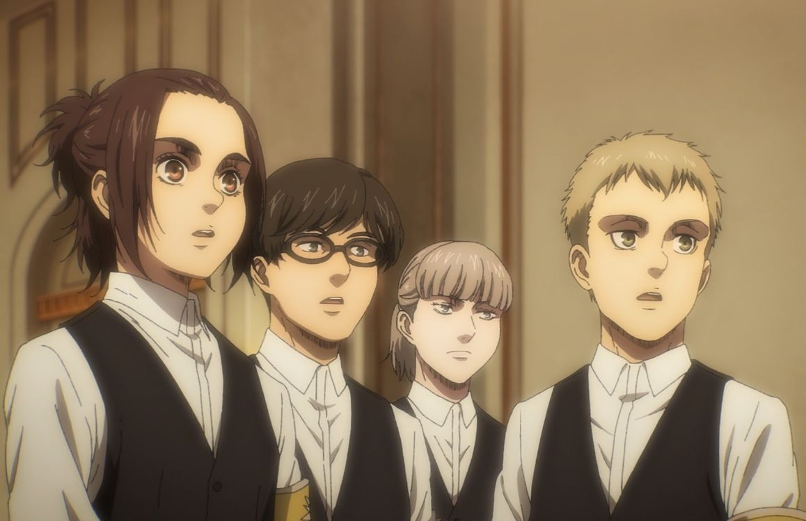
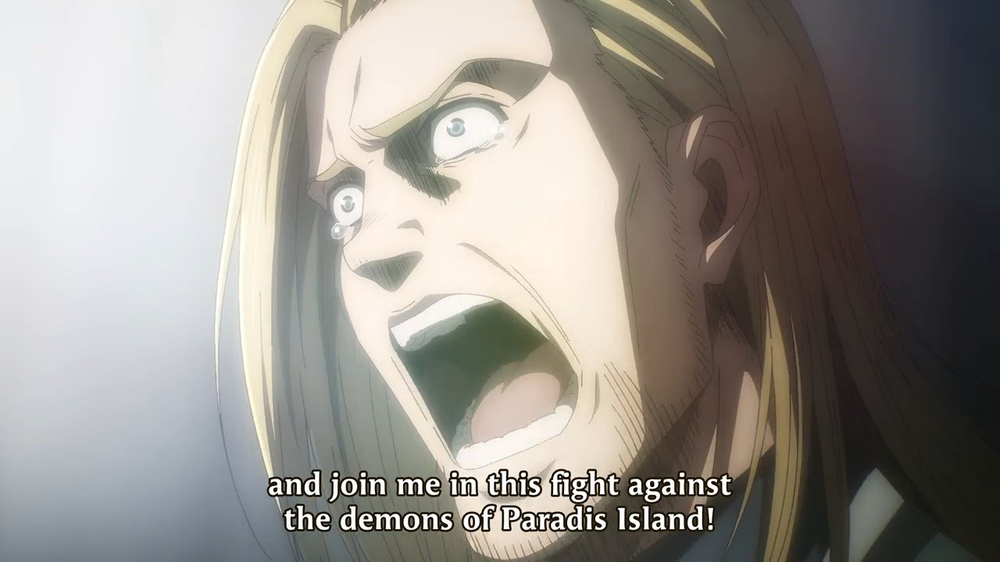
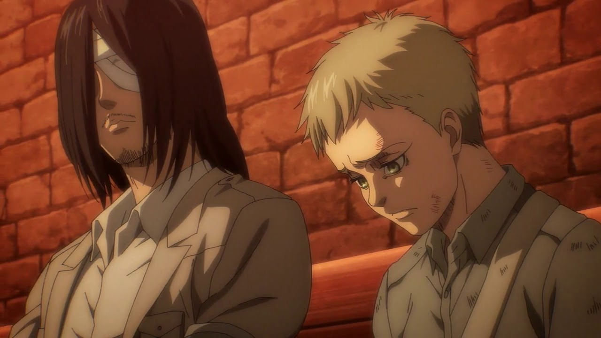
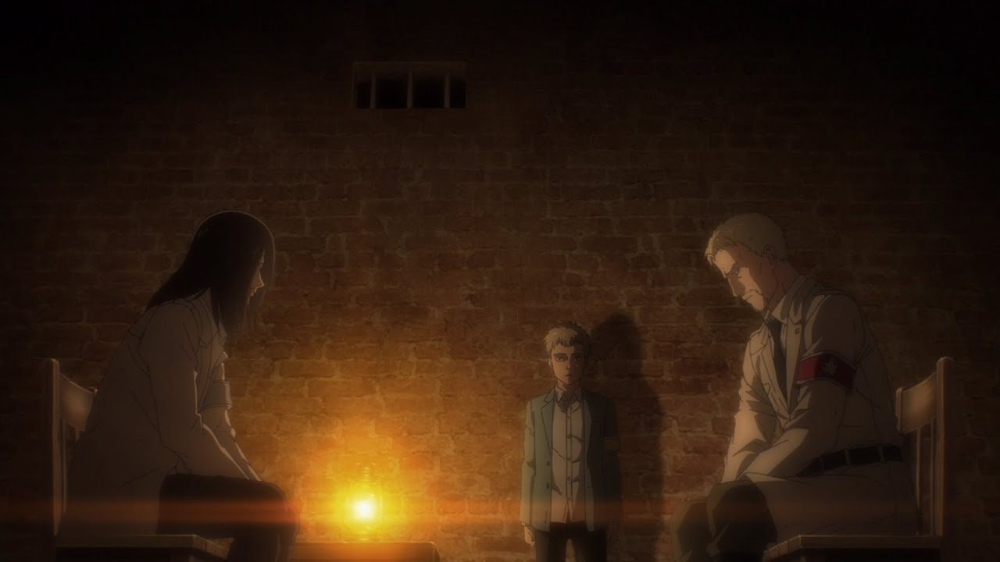
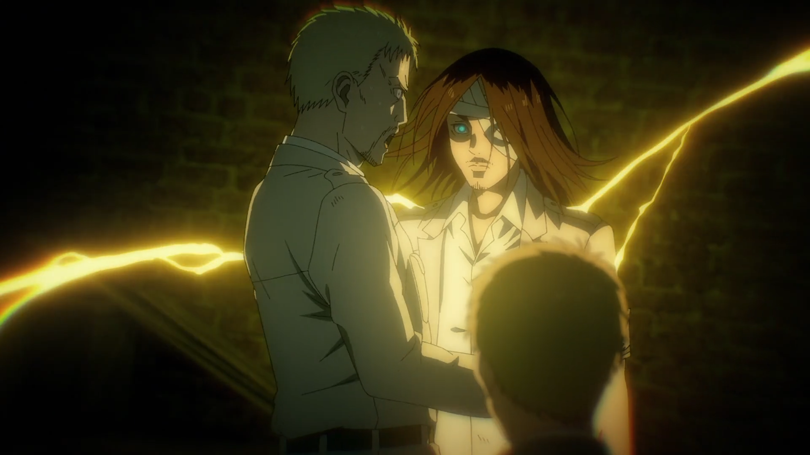
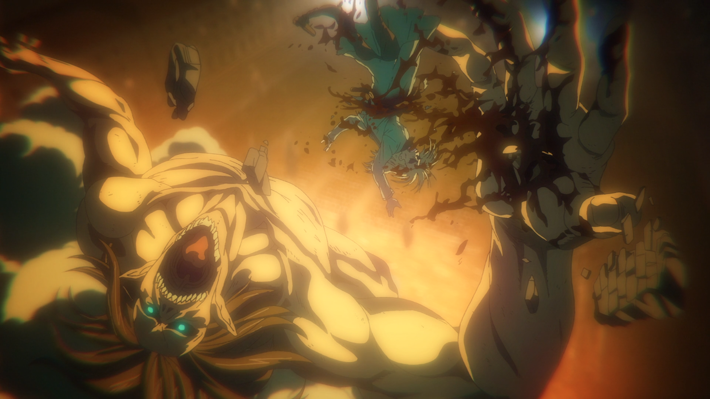
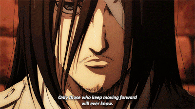

Introduction
Up until near the end of Season 3 of Attack on Titan, I felt as though it was an amazing anime; however, I also felt as though there wasn’t that much to distinguish it from it’s competitors. The animation was beautiful and the plot was great up until this point; however, this all changes with the Marley Arc, which causes the anime to go from great to absolutely phenomenal. It’s very unorthodox due to the fact that the whole arc strays away from the nation of Paradis that we’ve resided in for the first 3 seasons, and instead thrusts us into the world of Marley in order to have the viewers experience the other side of the war. As we are made aware from the finale of Season 3 of Attack on Titan, the Titans outside of the walls are not just a natural phenomenon; they are created by the nation of Marley, which resides across the ocean from Paradis. Marley has forever treated the Eldian race as “devils” since the Eldians raided Marley in a war millennia ago; thus, everyone on Marley has been brainwashed into believing that all Eldians are devils, and that Eldians must be extinguished. On the other hand, all Eldians had their memories of Marley wiped clean by their king Karl Fritz, so the Eldians have no recollection of these events transpiring. The Marley Arc is used to brilliant effect in portraying the cruelty, brutality, and senselessness of war, while also showing the feelings of the opposition, therein making the world of Attack on Titan a lot more grey. From here on out, there is no good and there is no bad.
The Boldness of the Arc
As I mentioned earlier, the Marley Arc is very unconventional and unusual in the fact that it separates us from the Scout Regiment and instead lets us view Marley through the eyes of characters such as Gabi, Falco, Reiner, Zeke, Peick Finger and Porco Galliard. The decision to throw away our beloved main characters for many episodes in favour of the Marleyan citizens - especially after the climatic Return to Shingashina Arc, which was without a doubt the single greatest Arc up until that point - was a very daring decision by Isayama in hindsight. I can’t imagine being an anime watcher or a manga reader who had just started the Marley Arc, and gruellingly waiting for weeks for the slightest hope of our main characters returning to the main story. However, just a few episodes into the Marley Arc, we grow so attached to the Marleyan characters to the point where we’re actually left begging for more time with them before the climax occurs in Eren’s raid on the Liberio district. Gabi and Falco serve as great interim main characters, as they are greatly reminiscent of Eren and Mikasa, respectively; Gabi’s hot headed, violent nature is allusive of Eren while Falco’s calm, yet caring demeanour towards Gabi is reminiscent of Mikasa. These innocent children are sort of refreshing, as we’ve constantly been dealing with serious and frantic matters up until this point.
The decision to throw us directly into Marley, hereby giving us the most direct opportunity to view the nation of Marley and its civilization, was an absolutely genius decision by Isayama. In doing so, he was able to further the show’s portrayal of two nations at war by providing us with the other side of the conflict. So, the viewer is now invested in the Eldians and the Marleyans, thus no longer making matters black and white. There is no right, and there is no wrong; each nation is only attempting to do what they deem is correct for the safety of its citizens. Thus, the Marley Arc succeeds in transitioning the story into a portrayal of the bloodlust, savagery, and brutality of both sides of war.
The Use of Propagandization and Parallels to Real Life
So, Season 4 seemingly begins as a completely independent show, with new main characters such as Reiner’s cousin Gabi Braun, a young boy named Falco Grice (this last name is actually familiar as it’s the name of Falco’s uncle, who was one of the Eldian Restorationists which Grisha worked with in order to fight for the freedom of Eldians residing in Marley), and other characters such as Zofia and Udo. In a way, these characters are reminiscent of the Eldians that we begin the show with back in Paradis, thus creating the similarities and parallels between the Marleyans and the Eldians which will we discuss shortly. Anyhow, all these young soldiers that we see are actually “Warrior Candidates”, meaning that they are Eldians and will become “honorary Marleyans” if they end up graduating from Warrior Training and inheriting one of the 9 Titans. This is also our first glimpse at the brainwashing and propoganda which Marley employs in order to indoctrinate its citizens into despising the Eldian people, and it’s quite terrifying. Marley using a group of Eldian children with special abilities in order to accomplish a whole nation’s dirty work just to give the children the hope that they can one day become “honorary Marleyans” is just absolutely horrifying to see. Children should not be involved in these wars as they are only contributing to the cycle of hatred, which is a major theme of Attack on Titan and of the Marley Arc as a whole, and we will discuss this theme a bit later.
In a way, we can draw parallels between Eldians and the Jewish people, and how they were hailed as “demons” by the Nazi’s, which was the sparking factor in the beginning of the Holocaust. In a similar way, the Nazi’s were able to accomplish their mission of spreading hatred to their fellow Germans through the use of propaganda and telling false truths. Although this is not as grey of a situation as Attack on Titan - since Paradis and Marley are both at fault, while people of Jewish descent were unfairly targeted for no reason at all - we are still able to draw these parallels in terms of the manner in which Marleyans treat the Eldians of Paradis. Although it’s never explicitly stated by Isayama, were are still able to connect these events in the story to real life events, as Isayama has notoriously used the story of Attack on Titan to portray real life political matters such as fascism, authoritarianism, and much more.
The Dynamic Between Eren and Reiner
When Gabi and Falco return from war, we see that there are a group of veterans with PTSD, and Falco aids one of the soldiers and takes a liking to him. The soldier’s name is revealed to be “Kruger”; however, when we get a good glimpse at Kruger’s face, we know who it is: Eren Yeager, with a deep feeling of hatred and sadness embedded within his eyes. Falco, unknowing of the fact that this Kruger figure is truly the greatest possible threat to his nation, aids Eren in “sending mails back to his family” (which is obviously Eren sending letters to the Scouts back in Paradis). Falco’s aid of Eren culminates in Falco unknowingly reuniting Reiner and Eren, who’s fates have once again collided. Eren meets Reiner under the stage where Willy Tybur is currently performing a speech in front of the Marleyan people, eventually resulting in the declaration of war against Paradis. This conversation the takes place between Eren and Reiner is possibly my personal favourite exchange between 2 characters in this series, so I wanted to glance over it.
When Reiner first sees Eren, he is bewildered; he can’t believe that his four years of peace at Marley with his family and his friends has been disturbed by the largest threat possible: Eren Yeager. So of course, Reiner is quick to ask, “Eren… how? Why did you come here?” and of course Eren’s response is, “The same reason you did. Because I had no other choice”. This is just another similarity between Reiner and Eren, as we can see that they’re two outcasts from each side of the war who were required to do what they did since they felt that they “had no other choice”. While Eren and Reiner converse, the speech is still going on above ground, and we are met with one of the best scenes of the show: as Willy Tybur says “Once again, there’s a threat to our world - a rebel against peace! His name: Eren Yeager”. As Willy says this, we flash to Eren taking off his bandages around his leg and regenerating his whole leg, as Falco watches in horror as he realizes who he’s made a friend of. This really shows Eren’s growth through out the series; a small young boy who couldn’t even transform into a Titan properly in the first season can now regenerate at will and has been labelled as the largest threat to Marley’s peace.
Falco is taken aback, and wildly upset with Eren as Falco painfully croaks, “You tricked me… and here I respected you… but you tricked me!”. Eren is obviously used to being betrayed by Marleyans such as Bertolt and Reiner, so Eren doesn’t feel effected by this at all. Eren feels as though he’s just paying back the hurt that the Marleyans inflicted upon him. As Willy describes the murderous Rumbling that Eren could potentially cause, Eren and Reiner have the following exchange that we need to look at in depth:
 (Note: the dialogue is from the English subtitles, and may not be totally precise.)Reiner: Back then, you told me: “I’ll make you guys suffer and die in the worst way possible”. Isn’t that why you came?
Eren: Oh, I vaguely remember saying that.
Reiner: Huh?
Eren: Just forget it. True, I saw everyone on the other side of the sea as my enemy. But then, I crossed the sea, slept under the same roof as them, ate the same food… Reiner, I’m the same as you. Sure, there’re jerks here, but good people, too. Across the sea, within the walls… it’s the same. But you guys were taught everyone in the walls was a devil. You were children who knew nothing, but it was drilled into you. You were just kids. What could you even do? Right, Reiner? Hasn’t that been eating away at you?
Reiner: No! You’re wrong, Eren! That day, when Marcel was eaten, Annie and Bertolt tried to turn back and end the mission. But I… I talked them into it and made them go on! I wanted to be a hero! I wanted people’s respect! It’s my fault! Your mom was eaten by a Titan because of me! I’m sick of this… of myself! Just kill me!
Eren: Like I thought, I’m the same as you. I think we were born this way. I keep moving forward…. until I destroy my enemies.

Here’s where we begin to see a different side of Eren. Eren is able to realize that Marley and Paradis are one and the same; there’s not much difference between the two nations at all. They exist for their own separate reasons, and they each have people that they want to protect. However, the Marleyans were conditioned to think that the Eldians are devils, while the Eldians were left with no knowledge of the Marleyan people at all. Thus, this exchange culminates in Eren saying, “Reiner, I’m the same as you”. However, what does Eren truly mean by this? Well, Eren and Reiner both shared the same comrades in the Scout Regiment, they both strive to rid the oppposing nation of their Titans, they both feel hatred to the opposing nation, they both feel guilt from people who have died for them, they have both suffered loss; they are the same.
Another way that Eren might see the similarities is the fact that Reiner’s admittance to his guilt allows Eren to see that Reiner truly is a broken man who somehow continues to move forward. We might not see it yet, but without any major spoilers of future arcs, Eren is very similar; he admits to being driven mad by guilt and sadness from sins that he has committed. So, it seems as though our main protagonist and main antagonist are very similar in terms of the circumstances they endured and the mental strain their deeds have caused them. In a way, this is what the story is attempting so hard to portray: that there are no protagonists or antagonists, and that war is just senseless conflict that should be avoided at all costs.
As for Eren, he isn’t forgiving at all and knows what must be done. As Willy Tybur states “here and now, as representative of the Marleyan government, I proclaim to the enemy forces of Paradis… a declaration of war!”, Eren transforms into a Titan from below the ground, thus killing all the civilians in the housing above him and destroying the stage which Willy Tybur stood upon. This whole scene is masterfully crafted, and possibly one of the best of the whole season. Eren devours Willy and the Scout Regiment arrives for aid as a high octane battle ensues between the Scouts and the Marleyan forces.
The Cycle of Hatred
As I’ve mentioned before, a theme that is explored in depth in Attack on Titan is the cycle of hatred. It’s shown to great effect here with Eren continuing the cycle of hatred that Marley inflicted upon him by destroying his home of Shinganshina. However, this only causes the Marleyan Warrior candidate Gabi's hatred towards Eren to grow since Eren has destroyed her home and killed her friends Zofia and Udo. Gabi therefore continues this cycle of hatred by killing Sasha, whom was one of the most loved characters by the fan base up until this point in time. The Scouts have an opportunity to continue the cycle of hatred and kill Gabi, but Jean Kirstein resists the Scouts from doing so as he states “would this truly end the killing?”, which is the correct mind state to have. Killing Gabi would only result in further deaths due to the fact that cycle would likely continue through another person. Nevertheless, the Scouts not killing Gabi does not stop her hatred towards Eldians and Eren in particular. Will Gabi truly continue the cycle of hatred until she destroys herself, or will she learn that pointless violence will get her nowhere? This question is answered in the next arc, but in the short fraction of time that Gabi is given in the Marley arc, she’s used to great effect to exemplify the cycle of hatred.
Conclusion
In conclusion, I feel as though the Marley arc is so exquisitely written; it provides a much needed emotional depth and connection to both sides of the war between Marley and Paradis. Instead of sticking to one perspective, Isayama completely flips the Attack on Titan series on us by instead making it seem as though the residents of Paradis that we’ve been fond of for so long are the villains in this arc of the story. This is a bold decision, and it truly payed off in hindsight since it resulted in some of the finest writing that I’ve seen in this show up until this date. I feel as though Return to Shinganshina was a perfect arc due to the fight scenes, the moral dilemma that the Scouts face in regards to saving Armin or Erwin and the basement reveal at the end of the show; however, the Marley arc is just unique in its writing and direction that it truly stands out among the arcs in Attack on Titan. It’s a phenomenal arc added to an already extraordinary story, and I hope it motivates other writers to take such risks when it comes to their manga or anime.
But there was something pushing us all along, causing us to step right into hell. For most of us, that something isn’t of our own will. We’re forced to by others, or by our environment. But the kind of hell seen by people who push themselves into it is something else. They also see something beyond that hell. Maybe it’s hope. Maybe it’s yet another hell. I don’t know which is is. The only people who do know… are the ones who keep moving forward.” - Eren Yeager